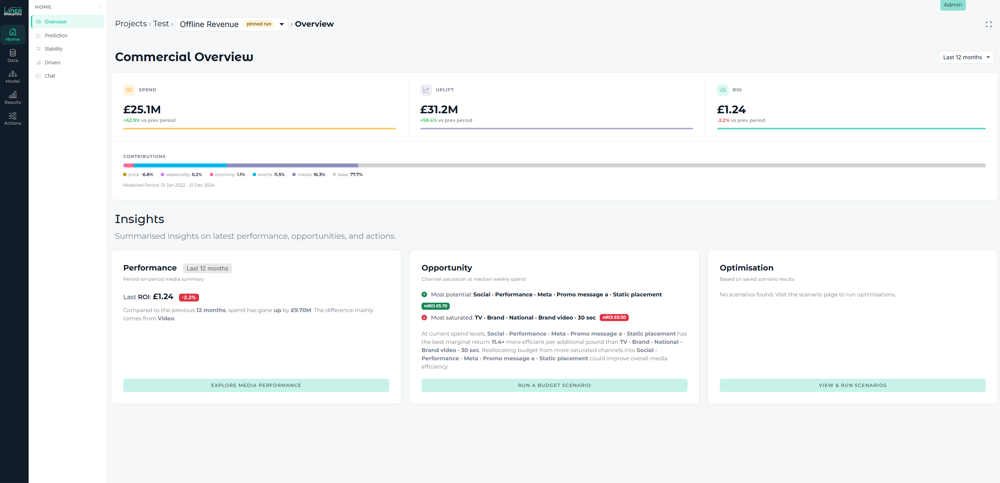
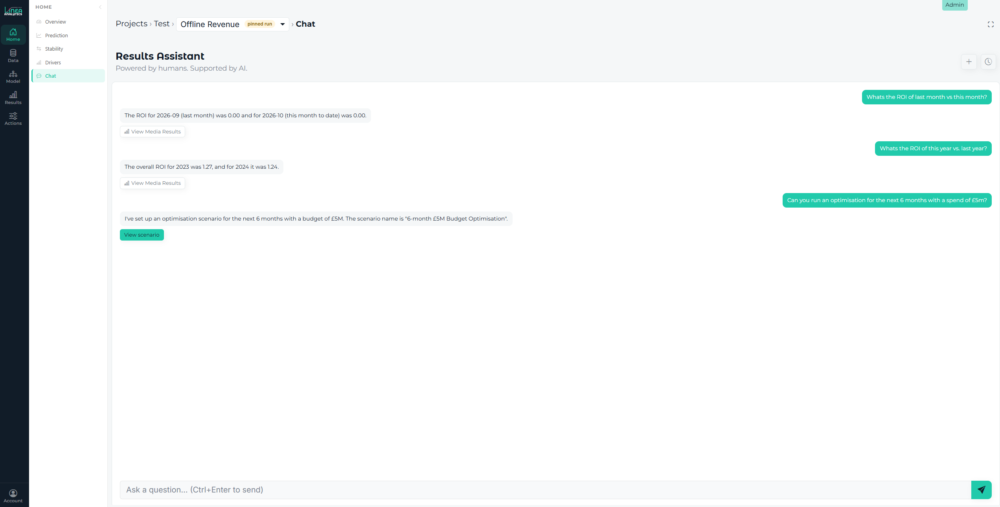

I keep seeing so called experts on LinkedIn and in forums say that: DasHBoards are DEad. But after checking my internet banking, then my investment app, before checking the Premier League table - I am not sure that is true.
My first line will demonstrate three things to you:
➡️My gender
➡️Arsenal are still top of the league
✅And that all three of these examples use forms of dashboards
As users, we clearly haven’t stopped consuming information this way. So where’s the disconnect?
AI has driven a powerful narrative: “No one will ever look at dashboards again.” It’s punchy and grabs attention, but in 2026, users are still using dashboards.
What is changing is how we interact with information. At Linea, we deliver our marketing measurement work by thinking about “information everywhere”. This is built across 4 delivery options for brands:
Still important today. Visual, interactive, and customisable to what our users care about in the place they look.
The downside is it requires habitual usage. As dashboards typically sit in their own environment, builders need to ensure that there are “reasons to use”. At Linea, we do this in a few ways:

Sometimes the most valuable output isn't another dashboard or a set of charts. It's a clear narrative that focuses a CMO’s attention on the business questions that matter, explains what the measurement means and sets out the actions to take.
At Linea, our experienced team has been there before. We turn measurement results into a story that can influence decisions across the business, from marketing and finance to the wider leadership team.
A mix of technical expertise and business focus builds stakeholder confidence, challenging assumptions and creating alignment around where to invest, what to change and how to drive growth.
Now dashboards are likely not the future of using data and information. The default style of LLM interfaces has become Chat. These let you ask questions and get instant answers. Over the last two years, it has become the default way to surface information.
At Linea, we have integrated chat into Linea AI Measurement Engine. This requires three elements to be successfully implemented for brands:

Agents take things a step further by proactively identifying opportunities and bringing them to you, without waiting for you to ask a question. Using Linea’s MCP, brands can integrate daily insights on media performance directly into their existing workflows in Slack, Teams or email.
For example, an agent could flag that Meta in-feed video was three times more effective at acquiring new customers last week, then recommend shifting 30% of budget towards that format.
Rather than waiting for someone to open a dashboard and spot the opportunity, the insight comes to them, alongside a recommended action. The user is the key person to validate budget changes against spend levels, data confidence and wider business objectives.
Future brands who use Marketing Mix Modelling will continue to vary. With CMO’s, Growth, Data and Finance teams all being key users. That's why the Future of MMM is from one interface to many. If you want your marketing measurement to exist everywhere, then talk to Linea.
And next time someone says dashboards are dead. I’d question that.
Have any project on mind?
For immediate support: